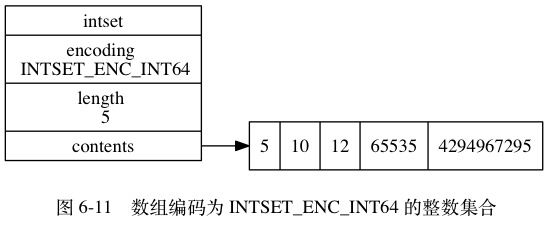
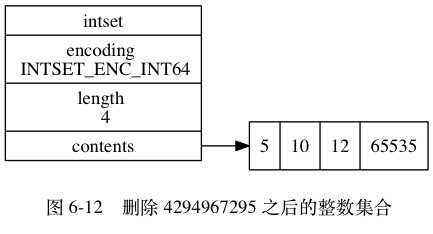

整数集合不支持降级操作， 一旦对数组进行了升级， 编码就会一直保持升级后的状态。
举个例子， 对于图 6-11 所示的整数集合来说， 即使我们将集合里唯一一个真正需要使用 int64_t 类型来保存的元素 4294967295 删除了， 整数集合的编码仍然会维持 INTSET_ENC_INT64 ， 底层数组也仍然会是 int64_t 类型的， 如图 6-12 所示。
int64_t
4294967295
INTSET_ENC_INT64

